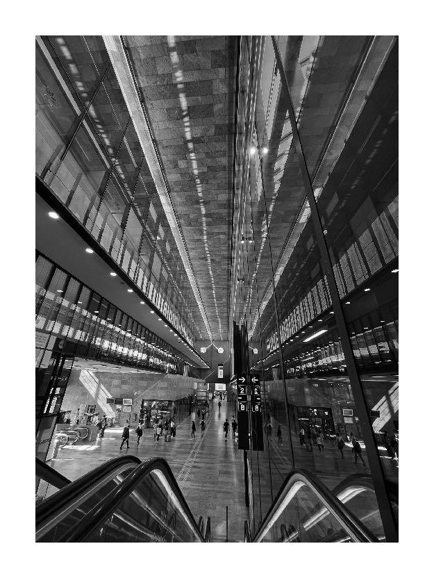
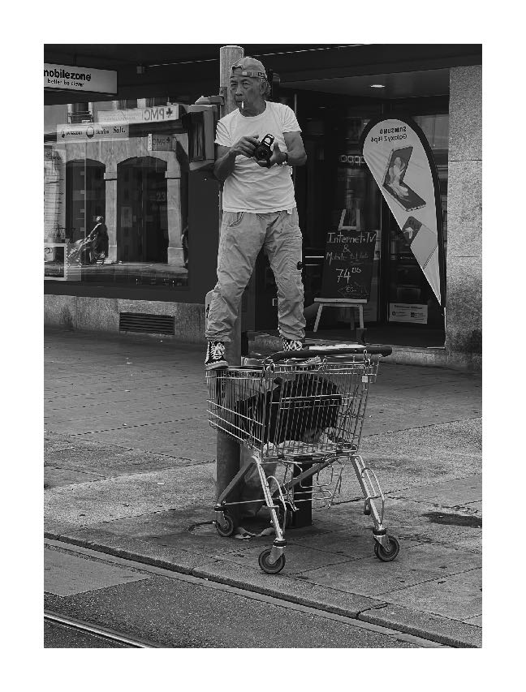
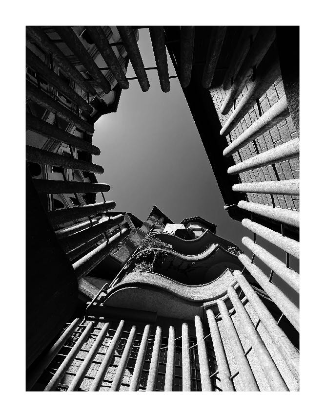
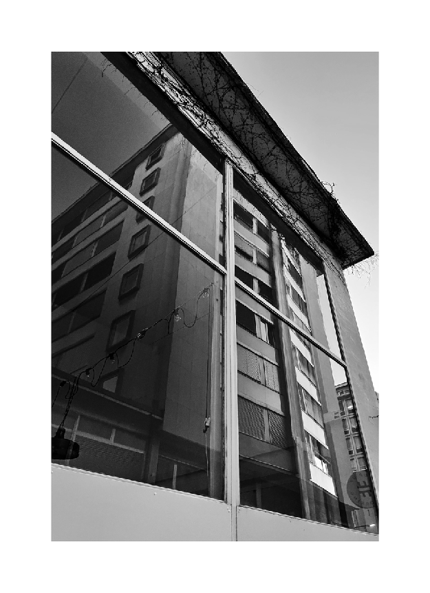
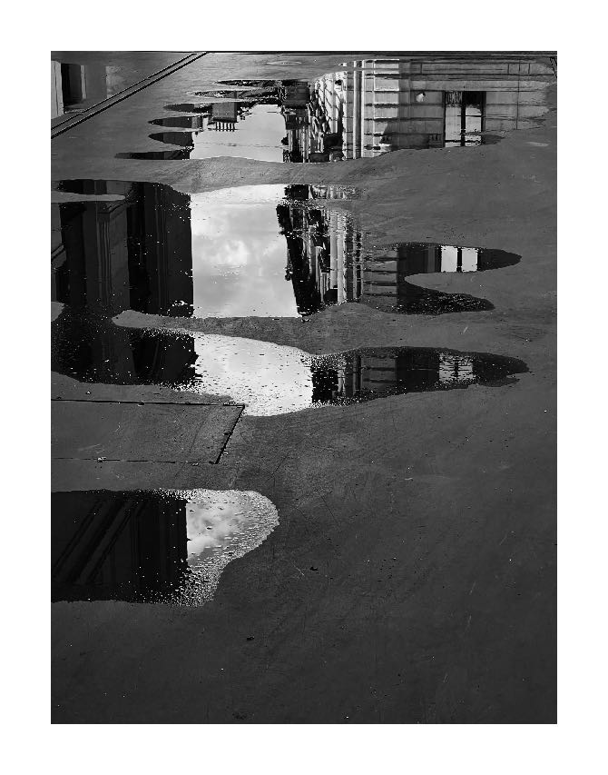
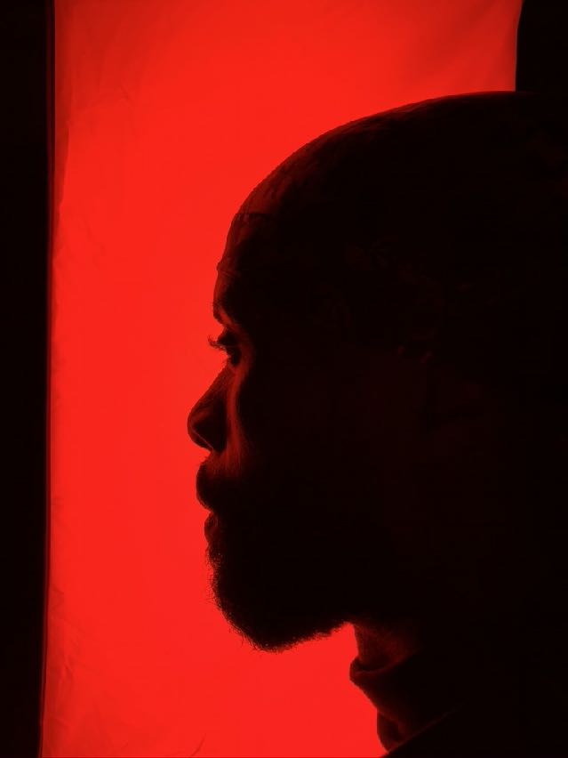

Independent platform for art, architecture, image and sound · Switzerland
DOMUS
CULTURA
A cultural house in motion.
Photography by Ben Taleb
Sound by Juice+


01 / Current
Cover story · PhotographyGood Morning World
A visual journal of architecture, public space and the people who move through it.
Enter the project ↗03 / Position
Culture is a space
we build together.
Domus Cultura brings contemporary art into everyday life through editions, encounters, field notes and sound. It is a platform for looking closely, listening deeply and making new work possible.
04 / Art
Ben Taleb
Good Morning World
Architecture, public space and the quiet theatre of the city.




05 / Image
Observe first.
Then frame.
The photographic practice moves between constructed space and human presence—between distance, rhythm and direct encounter.
Original art inquiries ↗06 / Events
Gatherings with
a point of view.
Domus Cultura — Opening Session
Art, conversation and a live selection by Juice+.
Register interest ↗Artist & Atelier Visits
Small-format encounters with artists and their working spaces.
Join the list ↗Open call / Artists
Should we know
your work?
Domus Cultura accepts rolling submissions for editorial features, studio visits, events and future collaborations.
Submit your practice ↗07 / Contact